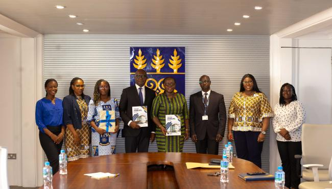
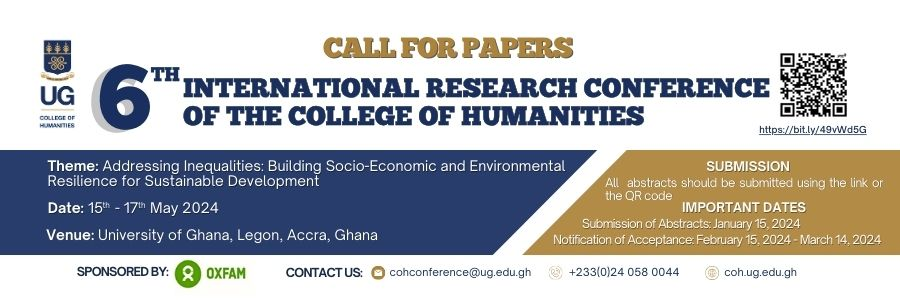

News & Events
UG Scientist and Collaborators Working on Revolutionising the Estimation of Food and Nutrient Intake in Households

University of Ghana Scientist and researcher Prof. Matilda Steiner-Asiedu and other scientists from renowned institutions worldwide are collaborating to develop and validate an innovative monitoring system aimed at revolutionising the estimation of food and nutrient intake in households in Ghana and Uganda.
Led by a consortium of experts, the project brings together researchers from Imperial College, London; the University of Ghana; the University of Alabama, USA; the University of Pittsburgh, USA; the University of Boston, USA; the University of Georgia, USA; and the Baylor College of Medicine, USA. This international collaboration is made possible through generous funding from the Bill & Melinda Gates Foundation, highlighting the global significance and impact of the initiative.
The primary goal of the study is to establish an objective, passive method for estimating food and nutrient intake in households, providing a more accurate and efficient means of understanding dietary habits.
Dr. Benny Lo, from Imperial College, London, plays a pivotal role as the Principal Investigator, leading the research. He is supported by two Ghanaian co-principal investigators, Prof. Matilda Steiner-Asiedu from the Department of Nutrition and Food Science at the University of Ghana and Prof. Alex Kojo Anderson, a University of Ghana alumnus who is currently a professor at the University of Georgia, USA.
Other distinguished Scientists working on the research project include Dr. Gary Frost (Imperial College, London), Dr. Edward Sazonov (University of Alabama, USA), Dr. Mingui Sun (University of Pittsburgh, USA), Dr. Megan A. McCrory (University of Boston, USA), Dr. Alex Kojo Anderson (University of Georgia, USA), and Dr. Thomas Baranowski (Baylor College of Medicine, USA).
CoH Presents Maiden Annual Report and Internal Internship Programme to Vice-Chancellor

At a meeting held with the Vice-Chancellor, Prof. Nana Aba Appiah-Amfo, on Thursday, 16th November 2023, the Provost of the College of Humanities, Prof. Daniel Frimpong Ofori, presented and unveiled the College's Maiden Annual Report, as well as its Internal Internship Programme. The Provost was accompanied by Mr. Benedict Fosu Adjei, the College Secretary, Dr. Sheena Lovia Boateng, the College Communications Coordinator, and a team from the College Communications Office. In presenting the purpose of the gathering, Prof. Daniel Frimpong Ofori, the Provost of the College of Humanities, expressed his gratitude to the Vice-Chancellor for taking time off her busy schedule to meet with him and his team. The Provost expressed his excitement at the completion of the College of Humanities Annual Report, which is the first of its kind since the establishment of the College, and the successful commencement of the College's Internal Internship Programme following the recent launch of the UG Internship Policy. He commended the efforts of his communications team, led by Dr. Sheena Lovia Boateng, the College Communications Coordinator, for their hard work in completing the report on schedule. The Provost also expressed his pleasure at the finished product and his optimism that the lessons learned from this initial process would be applied to the production of the 2023/2024 edition, which he said is already underway.
6TH INTERNATIONAL RESEARCH CONFERENCE OF THE COLLEGE OF HUMANITIES, UNIVERSITY OF GHANA

The College of Humanities of the University of Ghana announces the Call for Papers for its 6th International Research Conference. The College’s 2022 conference provided insights into the different dimensions of inequalities and their implications for sustainable development in the wake of the COVID-19 pandemic. The conference was climaxed with the declaration of the “Accra Consensus on Inequality” to help shape discussions on COVID-19 and inequalities while addressing the inequalities confronting the African continent.
Despite the productive engagements at the conference, there is still more to be done to address the phenomenon of inequalities at the local and global level. Some scholars have also opined that inequalities remain prevalent in social life, and that gaining deeper understanding of it is central to research and policy discourse. According to the United Nations, inequalities between social groups, including those based on age, gender, race, ethnicity, migrant status, and disability, are pervasive in developed and developing countries alike. Oxfam International has reported that, in Ghana, rising inequalities tend to hinder poverty reduction, hold back economic growth, and threaten social stability. In view of these, there remain unresolved issues that need the attention of academics and policy makers in their efforts at addressing inequalities.
This year’s conference therefore provides a critical platform for further debate, insightful and innovative theoretical discourses, practical and far-reaching initiatives that address inequalities worldwide. The conference seeks to encourage conversation on the diverse dimensions of inequalities and their implications, especially for post COVID-19 sustainable development.